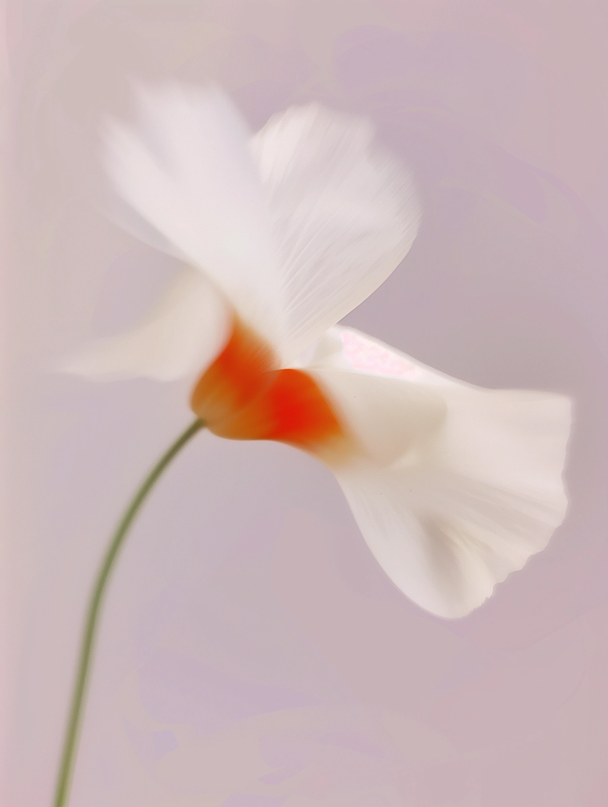

Sticky Grid Scroll
A structured scroll-driven image grid where movement unfolds progressively within a sticky layout.
Read the tutorialA structured scroll-driven image grid where movement unfolds progressively within a sticky layout.
Read the tutorial